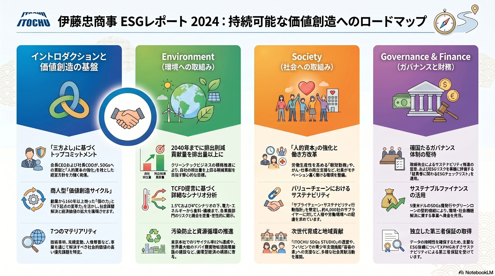

Environment
環境への取り組み
気候変動、安定的な調達・供給、資源循環、自然資本・生物多様性を、事業機会とリスク管理の両面から整理。
1気候変動への取組み
2安定的な調達・供給
イントロダクション、環境、社会、ガバナンス・財務を4つの柱に整理。商人型価値創造サイクルを中心に、事業を通じた社会課題解決を見せる構成です。

※アップロード画像「伊藤忠商事 ESGレポート 2024：持続可能な価値創造へのロードマップ」をLP内のメイン図解として組み込みました。
売り手よし、買い手よし、世間よし。利益と社会価値を分けて考えるのではなく、本業の中で環境・社会・経済価値を同時に広げていく考え方です。
人的資本、事業ポートフォリオ、顧客・パートナー資産、自然資本などを組み合わせる。
市場・生活者の声を起点に、川下から新しい商いの種を見極める。
SDGs、脱炭素、人的資本、バリューチェーン、人権などに本業で取り組む。
経済価値と環境・社会価値を積み上げ、企業ブランド価値の向上につなげる。
環境・社会・ガバナンスの視点を取り入れ、事業影響と社会影響の両面から重要課題を特定。リスクだけでなく機会として捉える構成です。
気候変動、安定的な調達・供給、資源循環、自然資本・生物多様性を、事業機会とリスク管理の両面から整理。
働きがい、人権、健康で豊かな生活、次世代育成、地域貢献を通じて社会価値を高める。
透明性ある意思決定、リスクマネジメント、技術革新、サステナブルファイナンスを統合的に展開。
個々の社員の成長、働き方改革、女性活躍、健康経営、能力開発を、非財務価値の中心に据えたセクションです。
朝型勤務、健康と仕事の両立、多様な人材が活躍できる環境整備など、人的資本強化の文脈を音声で補足できます。
気候変動、クリーンテック、自然資本・生物多様性、汚染防止、資源循環、サプライチェーンの透明性を統合して整理します。
2040年までのGHG排出量オフセットゼロ、2050年までの実質ゼロを目指し、次世代エネルギー、サーキュラーエコノミー、排出削減技術を推進。
回避、軽減、復元、再生、変革というステップで、事業活動と自然資本への影響を把握し、対応を強化。
バリューチェーンにおける人権尊重・サプライヤー監査・安全管理を通じ、調達から製造までの透明性を高める。
取締役会・経営会議・サステナビリティ委員会を通じた監督と、外部保証・サステナブルファイナンスにより、信頼性と実行力を担保します。
サステナビリティ関連リスクを経営の重要課題として認識し、各組織のアクションプランに落とし込む。
SDGs債やグリーンローン等を通じ、環境・社会課題の解決に資する事業へ資金を結びつける。
主要なESG指標について第三者保証を受け、開示情報の信頼性と透明性を高める。
12ページのエグゼクティブ・サマリーと、233ページの詳細版ESGレポートをタブで切り替えられる資料ビューアにしました。